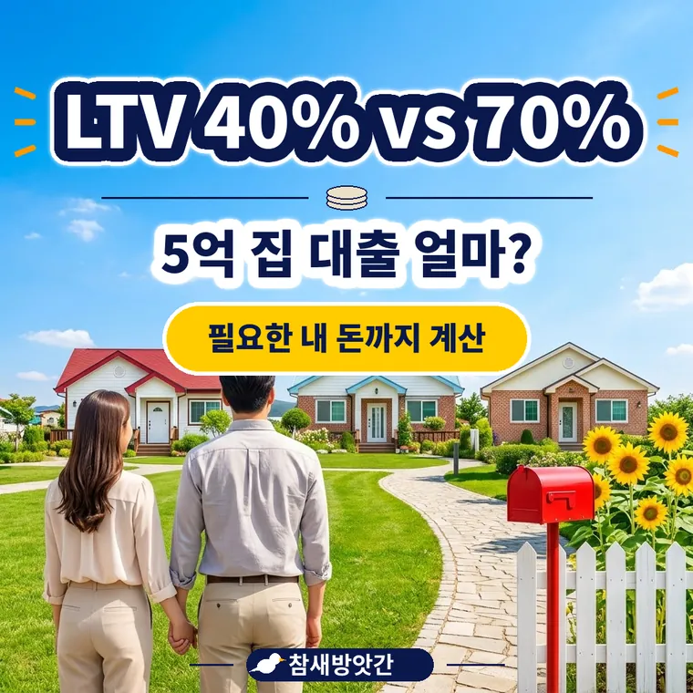

규제지역 LTV 40% vs 비규제지역 70%, 5억 집 살 때 내 돈 얼마 필요할까?
5억원 집을 살 때 규제지역(LTV 40%)에서는 대출이 최대 2억원, 비규제지역(LTV 70%)에서는 최대 3억 5,000만원입니다. 내가 준비해야 하는 돈은 3억원과 1억 5,000만원으로 1억 5,000만원 차이가 납니다.

LTV(담보인정비율)란
LTV(담보인정비율)는 주택의 평가 가치 대비 대출 가능한 최대 금액의 비율입니다.
금융기관은 집값 전체가 아니라 일정 비율까지만 빌려줍니다.
예를 들어 5억원 집에 LTV 40%면 5억원 × 40% = 2억원입니다.
규제지역과 비규제지역은 비율이 다릅니다
투기과열지구나 조정대상지역 같은 규제지역에서 무주택자가 집을 살 때 LTV는 현재 40%입니다(2026년 4월 기준).
비규제지역에서는 무주택자 기준으로 최대 70%까지 적용됩니다. 같은 집값이라도 지역에 따라 빌릴 수 있는 돈이 크게 달라집니다.
집값별 대출한도를 비교해 보겠습니다
| 집값 | LTV 40% 한도 | LTV 70% 한도 | 차이 |
|---|---|---|---|
| 4억원 | 1억 6,000만원 | 2억 8,000만원 | 1억 2,000만원 |
| 5억원 | 2억원 | 3억 5,000만원 | 1억 5,000만원 |
| 6억원 | 2억 4,000만원 | 4억 2,000만원 | 1억 8,000만원 |
집값이 오를수록 두 지역의 한도 차이도 커집니다. 6억원 집이면 1억 8,000만원 차이가 납니다.
5억원 집을 살 때 내 돈은 얼마나 필요할까
| 구분 | 규제지역(LTV 40%) | 비규제지역(LTV 70%) |
|---|---|---|
| 집값 | 5억원 | 5억원 |
| 대출 최대 | 2억원 | 3억 5,000만원 |
| 준비할 내 돈 | 3억원 | 1억 5,000만원 |
규제지역은 3억원, 비규제지역은 1억 5,000만원입니다.
취득세와 중개수수료 같은 비용은 따로 필요합니다.
LTV 계산이 끝이 아닙니다
LTV로 계산한 금액이 곧바로 받을 수 있는 대출금은 아닙니다. 소득으로 정해지는 DSR 한도가 더 낮으면 그쪽이 실제 한도가 됩니다.
DSR은 연 소득 대비 모든 대출의 연간 원리금 상환액 비율입니다. 소득이 부족하면 LTV 한도를 다 채우지 못합니다. 수도권·규제지역은 대출 최대 금액이 따로 정해져 있을 수 있습니다.
기준 가격과 규제지역은 바뀝니다
LTV를 곱하는 집값은 계약서 금액이 아니라 은행이 정하는 기준 가격입니다. 계약서 금액과 다를 수 있어 은행에 먼저 확인해야 합니다.
규제지역 지정과 LTV 비율은 정부 정책에 따라 바뀝니다. 집을 사는 시점에 최신 내용을 확인하세요.
자주 묻는 질문
계약서 금액과 다를 수 있습니다. 은행이 정하는 기준 가격으로 계산하는 경우가 많아서, 실제 한도는 은행에서 확인하는 것이 정확합니다.
아니요. 소득과 기존 대출로 정해지는 DSR 한도가 더 낮으면 그 금액까지만 승인됩니다. LTV 70%는 상한일 뿐입니다.
이 사이트의 주택담보대출 계산기에 집값을 넣고 LTV 비율을 40%와 70%로 바꿔 보세요. 대출 한도와 준비해야 할 내 돈 차이를 바로 볼 수 있습니다.
규제지역 지정은 정부 공고에 따라 바뀝니다. 사려는 집 주소를 기준으로 은행이나 국토교통부 공고에서 확인하세요.